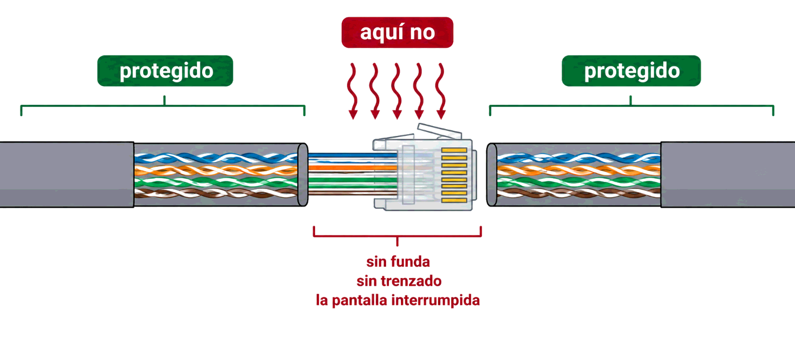
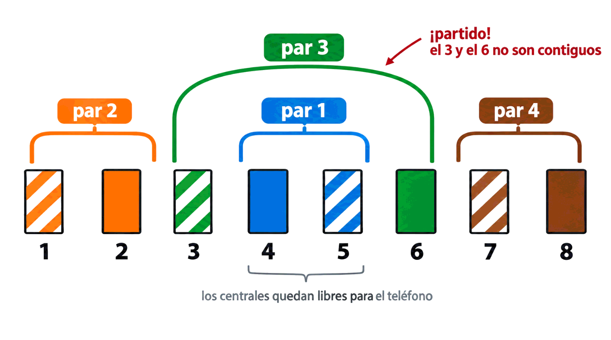
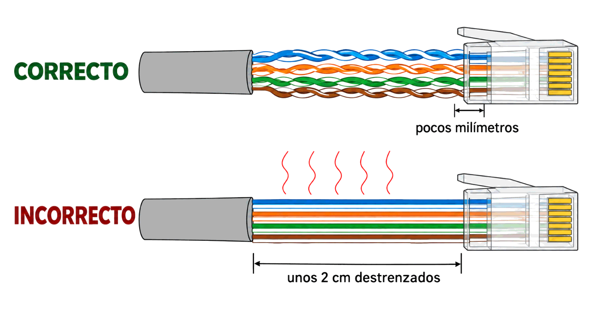
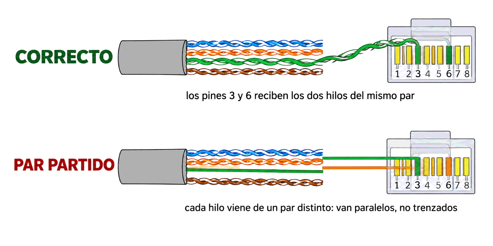

Contenido del día
- Por qué el conector es el punto débil
- Las cuatro recomendaciones generales
- T568A y T568B: qué hace cada pin
- Montaje de un RJ-45 macho, paso a paso
- Las longitudes que deciden si el enlace va bien
- Montaje de un RJ-45 hembra: la roseta
- Los errores típicos y sus síntomas
- Comprobar el trabajo
- Resumen y errores frecuentes
- Repaso con flashcards
- Quiz del día
1. Por qué el conector es el punto débil
A veces los conectores vienen ya montados de fábrica, como en los latiguillos cortos que unen equipos dentro de un armario. Pero los cables que van por canaletas, paredes y techos hasta un enchufe de pared hay que montarlos a mano. Y ahí está el riesgo:
Es muy importante realizar un buen montaje de los conectores porque estos puntos son más propensos a que el ruido se introduzca a través de ellos. Si no se siguen las recomendaciones, el conector montado puede convertirse en una fuente receptora de ruido para toda la instalación.
Tiene su lógica. En el conector pasan a la vez tres cosas malas:
- Se retira la funda, así que el cable queda desnudo.
- Se destrenzan los pares, y sin trenzado no hay cancelación: justo lo que ayer viste que protege del ruido.
- Se interrumpe la pantalla, si el cable la lleva, y hay que reconstruir su contacto a mano.

tramo de cable conector tramo de cable
════════════════ ▓▓▓▓▓▓▓▓▓▓▓▓▓▓ ════════════════
protegido ← aquí no → protegido
sin funda, sin trenzado,
la pantalla interrumpida2. Las cuatro recomendaciones generales
El libro las da para cualquier montaje, sea macho o hembra. Son cuatro y conviene sabérselas de memoria, porque cada una evita un problema concreto:
| Recomendación | Qué evita |
|---|---|
| 1. Mantener el trenzado de los pares lo más cerca posible del punto donde encajan con el conector | Que se pierda la cancelación del ruido y aparezca diafonía |
| 2. Eliminar solo el fragmento de pantalla protectora necesario para hacer la conexión | Dejar el cable desprotegido más allá de lo imprescindible |
| 3. No realizar empalmes de los cables | Un empalme es una discontinuidad: refleja señal y capta ruido |
| 4. Dejar longitud suficiente para que el cable no quede forzado ni tire del conector | Que el propio peso o un tirón acaben arrancando los contactos |
3. T568A y T568B: qué hace cada pin
Las dos conexiones que definen los estándares de cableado estructurado ya las conoces del Mes 1. Aquí están las dos tablas del libro, para tenerlas a mano durante el montaje:
| Pin | T568A · par | T568A · color | T568B · par | T568B · color |
|---|---|---|---|---|
| 1 | 3 | Blanco verde | 2 | Blanco naranja |
| 2 | 3 | Verde | 2 | Naranja |
| 3 | 2 | Blanco naranja | 3 | Blanco verde |
| 4 | 1 | Azul | 1 | Azul |
| 5 | 1 | Blanco azul | 1 | Blanco azul |
| 6 | 2 | Naranja | 3 | Verde |
| 7 | 4 | Blanco marrón | 4 | Blanco marrón |
| 8 | 4 | Marrón | 4 | Marrón |
Mira los pines 4, 5, 7 y 8: idénticos en las dos. Solo se intercambian los pares 2 y 3. Si te sabes una, te sabes la otra.
Qué pines transmiten y cuáles reciben
Fíjate en cómo se reparten los pares por los pines, porque explica muchas cosas:

par 1 → pines 4 y 5 (los dos del medio)
par 2 → pines 1 y 2
par 3 → pines 3 y 6 ← ¡partido! el 3 y el 6 no son contiguos
par 4 → pines 7 y 8En 10BASE-T y 100BASE-TX solo se usan dos pares: uno transmite —pines 1 y 2— y el otro recibe —pines 3 y 6—. Los pares que ocupan los pines 4-5 y 7-8 quedan libres. En 1000BASE-T, como viste la semana pasada, trabajan los cuatro a la vez y en ambos sentidos.
El cable cruzado
Para montar un cable cruzado se engasta cada extremo con una norma distinta: uno con T568A y el otro con T568B. Los estándares recomiendan además ponerle fundas de otro color, para distinguirlo de un vistazo.
El libro ya avisa de que los equipos actuales «también están preparados para funcionar con conexiones de cables paralelos»: es el auto-MDIX que viste en el Mes 1. Hoy el cable cruzado es una rareza, pero saber montarlo sigue siendo materia de examen y sigue haciendo falta con equipos antiguos.
4. Montaje de un RJ-45 macho, paso a paso
Estos son los ocho pasos del libro. El orden importa: el paso 1 es el que más se olvida, y olvidarlo significa empezar de cero.
| # | Paso | Cuidado con… |
|---|---|---|
| 1 | Introducir la funda protectora del conector por el extremo del cable | Si se olvida, ya no entra: hay que cortar y volver a empezar. Para un cable cruzado, funda de otro color |
| 2 | Eliminar un fragmento de funda del cable, unos 4 cm, con la herramienta de corte | La herramienta evita cortar por accidente los pares de dentro |
| 3 | Retirar hacia atrás la pantalla y enrollar sobre ella el hilo de cobre de drenaje, si lo hay | Solo en cables apantallados |
| 4 | Destrenzar los pares estirándolos con los dedos, y colocar los hilos en orden de colores | Aquí se decide si sigues la T568A o la T568B |
| 5 | Cortar los extremos para que todos queden a la misma altura | Si uno queda corto, no hará contacto y ese par quedará muerto |
| 6 | Introducir los hilos en el conector hasta el fondo, asegurando que la pantalla entra lo justo para tocar el chasis metálico | Si la pantalla no toca, extraer, cortar y repetir |
| 7 | Engastar con la crimpadora | Los conectores son de un solo uso: si sale mal, se corta y se coge otro |
| 8 | Colocar la funda protectora del conector | La que metiste en el paso 1 |
- Crimpadora o engastadora: fija los terminales del conector contra los hilos y aprieta la parte enfundada del cable. Sirve igual para RJ-11 y RJ-45.
- Herramienta de corte o pelacables: retira la funda sin dañar los pares.
- Herramienta de impacto: para los conectores hembra. Se ve en el apartado 6.
5. Las longitudes que deciden si el enlace va bien
Aquí está el dato que separa un montaje correcto de uno que «parece» correcto. El libro lo dice sin rodeos al pie de sus figuras:
- En categoría 5 hay unas longitudes máximas de destrenzado en el extremo del cable para que las interferencias se mantengan dentro de lo aceptable.
- En categoría 6 esas distancias deben reducirse mucho más: por ejemplo, un máximo de 6 mm de destrenzado.
Y el error que más se comete, también según el libro: destrenzar demasiado los pares, lo que ocasiona un mal funcionamiento del enlace.

CORRECTO ╪╪╪╪╪╪╪╪╪╪╪╪▓▓▓▓▓ el trenzado llega hasta el conector
↑ pocos mm sueltos
INCORRECTO ╪╪╪╪╪╪┃┃┃┃┃┃┃▓▓▓▓▓ dos centímetros de hilos paralelos
└─ zona sin protección ─┘Recuerda el mecanismo de ayer: el trenzado cancela porque los hilos se van intercambiando de posición. En el tramo destrenzado no se intercambian, así que ese trocito de cable se comporta como la antena del par paralelo. Dos centímetros no parecen nada; a 250 MHz, lo son.
- Funda retirada: unos 4 cm, lo justo para trabajar.
- Destrenzado en Cat 6: ≤ 6 mm.
- Pantalla eliminada: solo lo necesario.
- Todos los hilos, a la misma altura.
6. Montaje de un RJ-45 hembra: la roseta
Los conectores hembra son los que aparecen en los enchufes de pared —las rosetas— y en los paneles de distribución del armario. Son el otro extremo del cableado fijo que viste en el Mes 1.
| # | Paso |
|---|---|
| 1 | Eliminar un fragmento de funda, unos 4 cm, con la herramienta de corte |
| 2 | Retirar hacia atrás la pantalla y colocar el cable de forma que haga contacto con la conexión a tierra; enrollar ahí el hilo de drenaje si lo hay |
| 3 | Doblar el terminal de tierra hasta situarlo dentro del conector |
| 4 | Colocar los hilos según los colores marcados en el propio conector y destrenzar los pares lo mínimo posible |
| 5 | Introducir cada hilo en su hueco y engastarlo con la herramienta de impacto, que lo mete a presión y corta el sobrante |
| 6 | Colocar la carcasa protectora y montar el conjunto sobre el enchufe de pared |
- No hace falta cortar los hilos a la misma altura: la herramienta de impacto corta el sobrante ella sola al engastar.
- La roseta lleva impresos los colores de las dos normas, A y B, así que no hay que memorizar nada: se sigue la fila que corresponda.
- Los hilos deben mantenerse trenzados hasta el mismo punto donde quedan engastados. Es la recomendación número 1, aplicada al milímetro.
Hay modelos de conector hembra que no necesitan herramienta: se colocan los hilos en sus huecos y el engaste se produce al cerrar las piezas del propio componente. Son más cómodos y algo menos fiables que el engaste por impacto.
7. Los errores típicos y sus síntomas
Lo interesante de estos fallos es que casi ninguno deja la red muerta. La dejan a medias, que es mucho peor: nadie sabe a quién echarle la culpa.
| Error | Qué provoca | Cómo se manifiesta |
|---|---|---|
| Destrenzar de más | Diafonía en el extremo | Enlace inestable, errores, negociación a menos velocidad de la esperada |
| Un hilo corto, que no llega al fondo | Ese contacto no se cierra | Si es de los pares 1-2 o 3-6, no hay enlace; si es de los otros, funciona a 100 Mbps y no a 1 Gbps |
| Par partido (split pair) | Los hilos llegan a su pin, pero no van por el mismo par trenzado | Funciona a 10 y a 100 Mbps y falla a 1 Gbps o con cables largos. Un comprobador barato lo da por bueno |
| Pantalla sin contacto | La pantalla queda flotando | Más errores que con un cable sin apantallar, como viste ayer |
| Empalme en mitad del tramo | Discontinuidad de impedancia | Reflexiones y ruido; el certificador lo detecta como un fallo de retorno |
| Cable forzado o que tira del conector | Tensión mecánica en los contactos | Fallos intermitentes, los peores de diagnosticar: aparecen y desaparecen |
| Normas mezcladas sin querer | Un extremo A y otro B | Has hecho un cable cruzado sin pretenderlo. Con auto-MDIX funcionará, y nadie se enterará hasta el día que haga falta un directo |
El par partido, con detalle
Es el error estrella y merece explicarse despacio, porque entenderlo demuestra que has entendido el trenzado.
Imagina que, por descuido, se engastan los hilos así: el pin 3 recibe un hilo del par verde, y el pin 6 recibe un hilo del par naranja. Cada pin tiene un hilo, la continuidad es correcta pin a pin, y un comprobador de continuidad encenderá sus ocho luces en orden. Pero la señal que debía viajar por un par trenzado está viajando por dos hilos de pares distintos, que no se trenzan entre sí. Es decir: por dos hilos paralelos.

CORRECTO pin 3 ──┐ mismo par trenzado, se cancelan
pin 6 ──┘
PAR PARTIDO pin 3 ──── hilo del par verde ┐ no están trenzados
pin 6 ──── hilo del par naranja ┘ entre sí: antena8. Comprobar el trabajo
Un cable montado no está terminado hasta que se comprueba. Hay dos niveles, y confundirlos es otro clásico:
| Comprobador de continuidad | Certificador | |
|---|---|---|
| Qué hace | Comprueba que cada pin de un extremo llega a su pin en el otro | Mide los parámetros eléctricos: atenuación, diafonía, pérdida de retorno, retardo |
| Qué detecta | Hilos cortados, cruzados o sin contacto | Todo lo anterior más el par partido, el destrenzado excesivo y el exceso de longitud |
| Qué responde | «Hay continuidad» | «Este enlace cumple categoría 6» |
| Precio | Unos pocos euros | Miles |
| Cuándo se usa | Al montar un latiguillo | Al entregar una instalación completa |
9. Resumen y errores frecuentes
- El conector es donde el cable pierde funda, trenzado y pantalla: por eso es la puerta de entrada del ruido.
- Cuatro recomendaciones: trenzado hasta el conector · quitar solo la pantalla necesaria · no empalmar · no forzar el cable.
- T568A y T568B se diferencian solo en el verde y el naranja. El par 3 ocupa los pines 3 y 6.
- RJ-45 macho: ocho pasos, y el primero es meter la funda.
- Funda retirada, unos 4 cm; destrenzado en Cat 6, ≤ 6 mm.
- RJ-45 hembra: se engasta con herramienta de impacto, que corta el sobrante, y se conectan los cuatro pares.
- El par partido pasa la prueba de continuidad y arruina el gigabit.
| Se dice… | …pero en realidad |
|---|---|
| «Si el comprobador da las ocho luces, el cable está bien» | Solo dice que hay continuidad. Un par partido da las ocho luces |
| «Da igual destrenzar un poco más, son dos centímetros» | A 250 MHz esos dos centímetros son una antena. En Cat 6 el máximo es 6 mm |
| «Si el conector sale mal, se vuelve a apretar» | Son de un solo uso: se corta y se coge otro |
| «Como voy a 100 Mbps, conecto solo dos pares» | Se conectan los cuatro, o la instalación no admitirá gigabit |
| «Un empalme bien hecho no da problemas» | La norma lo prohíbe: crea una discontinuidad que refleja señal y capta ruido |
| «En la roseta hay que memorizar los colores» | Los lleva impresos, con las dos normas |
| «Mezclar A y B rompe el cable» | No: hace un cruzado. Con auto-MDIX ni te enteras, hasta que te hace falta un directo |
10. Repaso con flashcards
Piensa la respuesta antes de girar la tarjeta.
Quiz del día
15 preguntas · 22 minutos · Contesta sin volver a la teoría
El cronómetro no corre mientras lees: arranca al llegar aquí, al pulsar «Empezar quiz» o al marcar tu primera respuesta.
Resultados
Respuestas correctas: 0 / 0
Respuestas incorrectas: 0
Vas a inspeccionar los conectores que ya tienes, a diagnosticar cinco averías a partir de sus síntomas y a dibujar el plano de una instalación pequeña. Si tienes crimpadora, hay una ampliación con el montaje real.
→ Ir al laboratorio del Día 2 (70 min)
Coaxial y fibra óptica: el medio que sostuvo las primeras redes locales y el que sostiene hoy Internet. Con un cálculo nuevo: el presupuesto óptico en decibelios.
Tarea de calentamiento (5 min): mira el cable de la antena del televisor. ¿Por qué crees que es tan grueso comparado con uno de red, si solo lleva una señal?